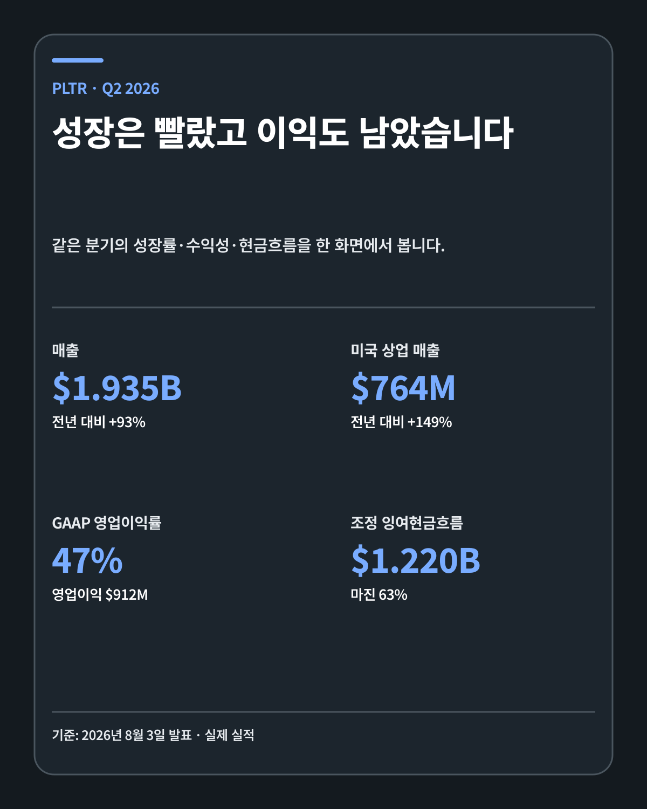
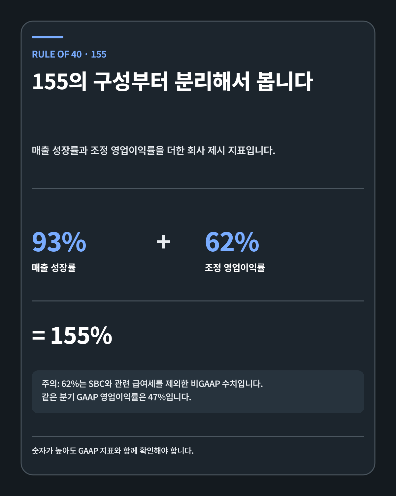
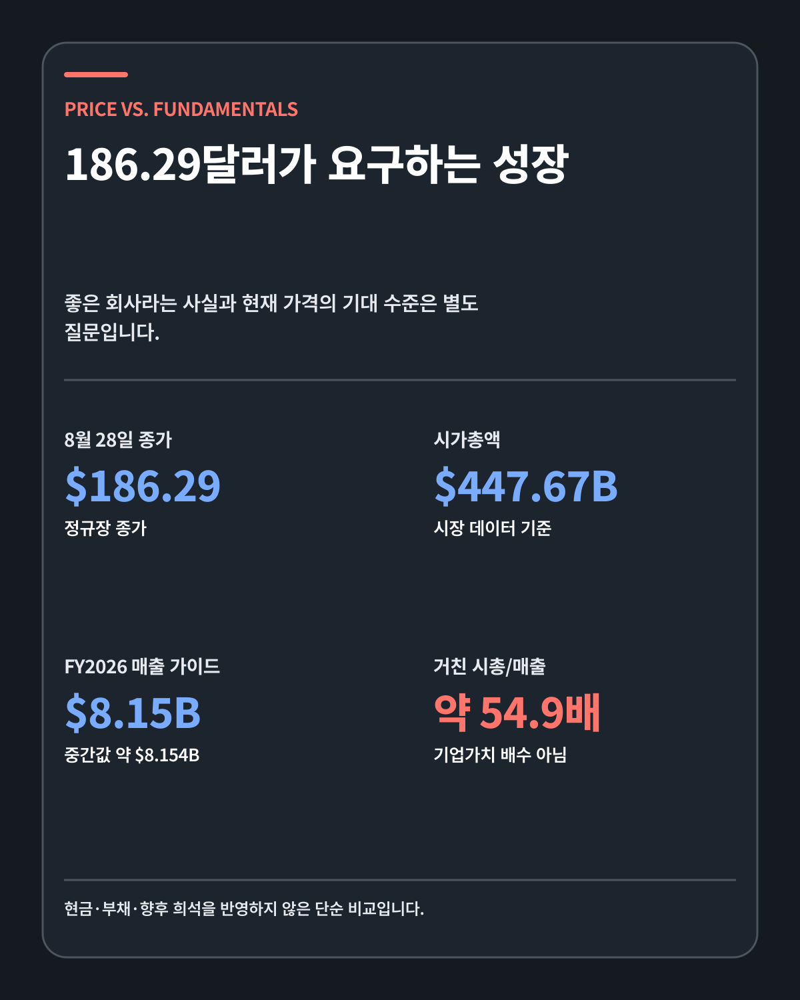
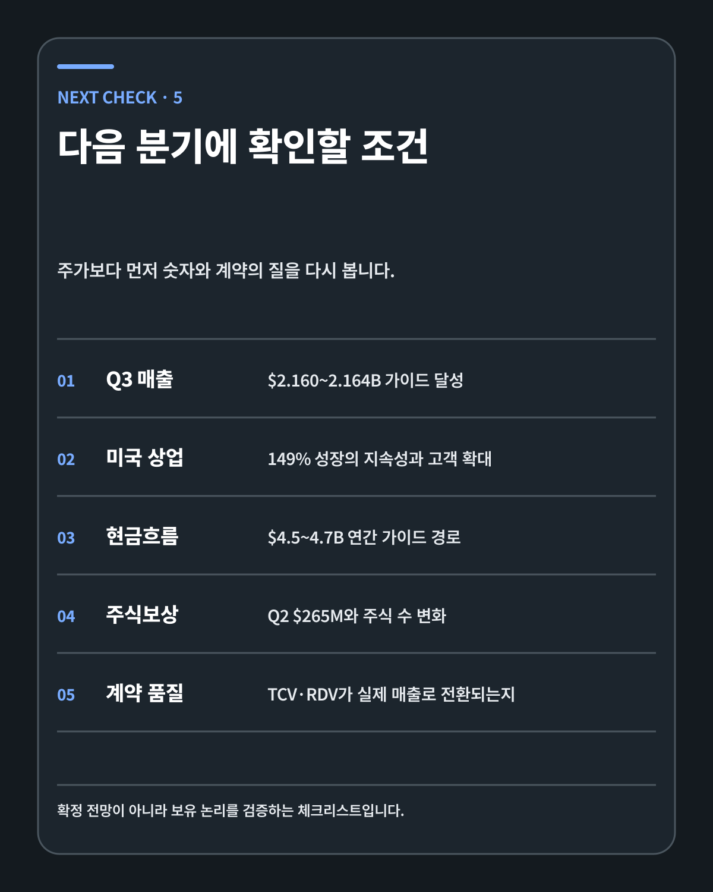

AI SOFTWARE · DEEP RESEARCH
팔란티어 186달러의 기대치 해부: 93% 성장·Rule of 40·계약가치·SBC
팔란티어의 사업은 강해졌습니다. 남은 질문은 186.29달러에 반영된 기대를 매출 전환, GAAP 이익, 현금흐름과 주당 가치가 얼마나 오래 넘어설 수 있는가입니다.
FIVE-LINE ANSWER
팔란티어의 2026년 2분기 매출은 19억3546만달러로 전년보다 93% 늘었고, GAAP 영업이익률은 47%였습니다. 성장과 이익이 동시에 개선된 보기 드문 분기였습니다. 회사가 제시한 Rule of 40 155%는 매출 성장률 93%와 조정 영업이익률 62%를 더한 값이며, 62%에는 주식보상비용과 관련 급여세가 제외됩니다. 2분기 주식보상비용은 2억6521만달러였습니다. 8월 28일 종가 186.29달러와 시가총액 4476억7000만달러를 2026년 매출 가이던스 중간값과 단순 비교하면 약 54.9배입니다. 사업의 방향은 강하지만, 현재 가격은 여러 해의 고성장과 마진 확대가 흔들리지 않아야 정당화되는 수준입니다.
팔란티어는 무엇을 파는 회사인가
팔란티어를 AI 모델 회사로만 분류하면 사업의 핵심을 놓치기 쉽습니다. 기업은 이미 수많은 데이터베이스, 업무 도구, 규정, 승인 절차와 현장 장비를 갖고 있습니다. 언어모델을 추가해도 이 구조가 자동으로 하나로 연결되지는 않습니다. 누가 어떤 데이터를 볼 수 있는지, 모델이 어떤 결정을 제안할 수 있는지, 사람이 어디에서 승인해야 하는지, 결과가 실제 운영 시스템에 어떻게 기록되는지를 함께 설계해야 합니다.
팔란티어의 Foundry와 AIP는 이 간극을 공략합니다. Ontology는 기업의 사람·장비·주문·위험·권한을 현실의 관계에 맞게 묶습니다. AIP는 모델을 이 구조 안에서 사용하도록 연결합니다. 고객이 단순한 챗봇을 쓰는 데 그치지 않고 재고 배치, 생산 일정, 정비, 국방 작전, 금융 위험 관리 같은 업무에 AI를 넣게 만드는 방식입니다.
이 사업에서 해자는 모델의 크기만으로 생기지 않습니다. 고객의 데이터 구조를 이해하고, 권한과 규칙을 적용하며, 실제 업무 흐름을 바꾸는 과정에 시간이 듭니다. 시스템이 핵심 운영에 들어갈수록 교체 비용도 커집니다. 반대로 구축이 복잡하고 고객의 의사결정이 늦으면 판매 주기가 길어질 수 있습니다. 기술적 깊이와 영업 복잡성이 같은 뿌리에서 나옵니다.
93% 성장은 어디에서 나왔나
SEC에 제출된 2026년 2분기 실적 발표는 매출 성장의 구성을 구체적으로 보여 줍니다.
| 항목 | 2026년 2분기 | 전년 대비 | 분기 대비 |
|---|---|---|---|
| 전체 매출 | 19억3546만달러 | +93% | +19% |
| 미국 매출 | 15억7300만달러 | +115% | +23% |
| 미국 상업 매출 | 7억6400만달러 | +149% | +28% |
| 미국 정부 매출 | 8억900만달러 | +90% | +18% |
| GAAP 영업이익 | 9억1200만달러 | 영업이익률 47% | - |
| 조정 잉여현금흐름 | 12억2000만달러 | 마진 63% | - |
가장 큰 변화는 미국 상업 사업입니다. 팔란티어의 기원은 정부와 국방 데이터 분석에 가깝습니다. 상장 초기에는 정부 계약 의존과 긴 판매 주기가 성장의 한계로 자주 지적됐습니다. 2분기에는 미국 상업 매출이 149% 늘어 정부 매출 성장률 90%를 앞섰습니다. 정부 사업이 약해진 것이 아니라 두 축이 동시에 커지는 가운데 상업 사업이 더 빨라졌습니다.
계약 규모도 확대됐습니다. 회사는 분기에 100만달러 이상 계약 220건, 500만달러 이상 계약 98건, 1000만달러 이상 계약 73건을 체결했습니다. 미국 상업 TCV는 21억3200만달러로 153% 증가했고, 미국 상업 remaining deal value는 62억3800만달러로 124% 늘었습니다.
수치만 보면 AIP가 파일럿을 넘어 생산 환경으로 확장되는 과정과 맞닿아 있습니다. 다만 계약 숫자는 매출이 아닙니다. 고객이 실제로 서비스를 사용하고, 회사가 수행 의무를 이행하며, 청구하고, 현금을 회수해야 경제적 가치가 완성됩니다. 뒤에서 이 경계를 따로 살펴봅니다.

Rule of 40 155%를 제대로 읽는 법
Rule of 40은 소프트웨어 기업의 성장률과 수익성을 함께 보기 위한 경험적 지표입니다. 전통적으로 두 수치의 합이 40%를 넘으면 성장과 이익의 균형이 좋다고 평가합니다. 팔란티어가 발표한 155%는 이 기준을 크게 넘어섭니다.
산식은 단순합니다.
매출 성장률 93% + 조정 영업이익률 62% = Rule of 40 155%
문제는 숫자의 정의입니다. 팔란티어 2026년 2분기 10-Q의 비GAAP 조정표를 보면 조정 영업이익은 GAAP 영업이익에 주식보상비용 2억6521만달러와 관련 고용주 급여세 1726만달러를 더해 계산합니다. 그 결과 조정 영업이익은 11억9447만달러, 조정 영업이익률은 62%가 됩니다.
같은 분기의 GAAP 영업이익은 9억1200만달러, 영업이익률은 47%입니다. GAAP 기준으로 단순히 매출 성장률과 더하면 140%입니다. 이 값도 매우 높습니다. 따라서 비GAAP 조정을 지적한다고 해서 팔란티어의 수익성이 약하다는 결론이 나오지는 않습니다. 오히려 어떤 비용을 제외했는지 투명하게 구분하면 성장의 질을 더 정확히 볼 수 있습니다.
Rule of 40은 비교 도구이지 기업가치 계산식이 아닙니다. 155%가 높다고 해서 현재 주가가 자동으로 싸지는 것도 아닙니다. 성장률은 규모가 커질수록 낮아질 수 있고, 조정 마진은 주식보상과 관련 비용을 제외합니다. 다음 분기에도 성장과 GAAP 수익성이 함께 개선되는지 확인해야 이 지표가 주당 가치로 이어집니다.

현금흐름과 주식보상을 동시에 봐야 하는 이유
팔란티어의 현금 창출력은 강합니다. 2분기 영업활동현금흐름은 12억1617만달러였고 조정 잉여현금흐름은 12억2000만달러였습니다. 회사는 2026년 연간 조정 잉여현금흐름 가이던스를 45억–47억달러로 높였습니다. 매출 가이던스 81억5000만–81억5800만달러와 비교하면 높은 현금 전환을 기대하고 있다는 뜻입니다.
소프트웨어 플랫폼이 확장되면 신규 매출을 만들 때 필요한 추가 비용이 매출보다 느리게 늘 수 있습니다. 팔란티어의 2분기 GAAP 영업이익률 47%는 이 영업 레버리지가 회계상 이익에도 나타났음을 보여 줍니다. 단순히 조정 수치만 좋아진 분기는 아닙니다.
주식보상은 다른 방향에서 주당 가치를 점검하게 합니다. 2분기 SBC는 2억6521만달러로 전년 동기 1억5997만달러보다 1억달러 이상 증가했습니다. 매출 대비 약 13.7%입니다. 주식보상은 현금흐름표에서 비현금 비용으로 되돌려지기 때문에 잉여현금흐름이 높아지는 데 유리합니다. 그러나 기존 주주에게는 발행주식 수와 희석이라는 경제적 비용이 남습니다.
6월 말 기준 Class A 주식은 약 23억51만주, Class B는 약 1억137만주, Class F는 100만주가 발행돼 있었습니다. 합계는 약 24억주입니다. 주식보상비용 한 분기의 절대액만 볼 것이 아니라 기본주식수와 희석주식수의 변화, 직원 보상과 주주환원, 현금 창출력의 증가 속도를 함께 확인해야 합니다.
제가 보는 좋은 경로는 분명합니다. 매출과 GAAP 영업이익이 성장하고, 조정 잉여현금흐름도 늘며, 주식 수 증가율은 둔화하는 조합입니다. 반대로 현금흐름은 늘어도 SBC와 주식 수가 더 빠르게 증가한다면 회사 전체 가치와 주당 가치 사이에 간극이 생길 수 있습니다.
계약 숫자가 매출로 바뀌는 단계
팔란티어는 TCV, RDV와 대형 계약 건수를 적극적으로 공개합니다. 이 숫자는 수요의 방향을 보여 주지만 확정 매출과 동일하지 않습니다.
공식 10-Q 위험요인은 많은 계약에 편의상 해지 조항이 포함돼 있다고 설명합니다. 미국 연방정부 계약의 옵션은 1년 이상 앞서 행사할 수 없는 경우가 있습니다. 고객이 옵션을 행사하지 않거나 계약을 끝내고, 예산 승인이 지연되거나 조건이 재협상되면 전체 계약가치 중 일부가 매출로 이어지지 않을 수 있습니다. 회사도 과거 계약 전체 가치를 모두 매출로 실현하지 못했다고 명시합니다.
계약이 경제적 가치로 바뀌는 과정은 다음과 같습니다.
- 고객과 계약을 체결하고 옵션·해지 조건을 정합니다.
- 팔란티어가 클라우드 접근권, 온프레미스 소프트웨어, 운영·유지보수 또는 전문서비스를 제공합니다.
- 수행 의무와 계약 기간에 따라 매출을 인식합니다.
- 고객에게 청구하고 매출채권을 기록합니다.
- 고객이 대금을 지급하면 영업현금흐름으로 전환됩니다.
이 단계가 필요한 이유는 팔란티어의 클라우드 구독과 온프레미스 소프트웨어 매출이 일반적으로 계약 기간에 걸쳐 인식되기 때문입니다. 계약 발표 당일 전체 금액이 매출로 잡히지 않습니다. TCV가 급증해도 매출과 현금흐름이 같은 속도로 움직이지 않을 수 있습니다.
투자자는 계약 숫자가 큰지뿐 아니라 전환 속도와 취소 가능성을 함께 봐야 합니다. 다음 분기에 TCV가 둔화하더라도 기존 계약의 매출 전환이 빨라지면 실적은 강할 수 있습니다. 반대로 TCV가 높아도 옵션 행사와 수행이 늦어지면 매출 기대가 뒤로 밀립니다.
고객 집중은 두 종류로 나눠 봐야 합니다
10-Q에는 한 고객이 2026년 6월 말 매출채권의 27%를 차지했다고 나옵니다. 2025년 말에는 같은 지표가 25%였습니다. 매출채권은 특정 시점에 고객에게 받을 돈입니다. 한 고객의 결제 일정이 전체 회수 속도에 영향을 줄 수 있다는 뜻입니다.
매출 집중은 다른 모습입니다. 2분기와 상반기에 전체 매출의 10%를 넘는 단일 고객은 없었습니다. 상위 3개 고객은 2026년 상반기 매출의 16%를 차지했습니다. 이들 상위 3개 고객은 평균 15년 동안 거래한 고객이었습니다.
매출채권 27%와 상위 고객 매출 16%를 더하거나 직접 비교하면 안 됩니다. 기준 시점과 분모가 다릅니다. 첫 번째는 아직 회수하지 않은 돈, 두 번째는 기간 동안 인식한 매출입니다. 팔란티어의 고객 관계가 깊다는 장점과 현금 회수 시점이 일부 고객에 몰릴 수 있다는 위험을 각각 보여 줍니다.
긴 고객 관계는 해자의 증거가 될 수 있습니다. 조직의 핵심 데이터와 운영 체계에 들어가면 교체가 어렵기 때문입니다. 동시에 대형 고객의 예산이나 프로젝트 일정이 바뀌면 실적 변동이 커질 수 있습니다. 집중도 자체를 선악으로 나누지 않고 갱신, 확장, 회수의 질을 추적해야 합니다.
186.29달러에서 시장이 요구하는 것
S&P Global Market Intelligence 기반 가격 기록에 따르면 팔란티어는 8월 28일 186.29달러에 마감했습니다. 같은 기준의 시가총액은 4476억7000만달러였습니다. 회사가 제시한 2026년 매출 가이던스 중간값 약 81억5400만달러로 나누면 약 54.9배입니다.
| 계산 항목 | 사용 값 | 해석 경계 |
|---|---|---|
| 8월 28일 종가 | 186.29달러 | 정규장 종가 |
| 시가총액 | 4476억7000만달러 | 시장 데이터 제공처 기준 |
| FY2026 매출 가이드 | 81억5000만–81억5800만달러 | 회사 전망, 확정 실적 아님 |
| 거친 시총/매출 | 약 54.9배 | 현금·부채·희석 조정 전 |
이 값은 정식 기업가치/매출 배수가 아닙니다. 기업가치를 계산하려면 현금과 부채를 조정해야 하고, 미래 주식 수와 실제 연간 매출도 반영해야 합니다. 여기서는 현재 기대 수준의 크기를 보기 위해 단순 비교만 사용했습니다.
54.9배의 배수는 시장이 팔란티어의 2026년 실적만 사는 것이 아님을 뜻합니다. 앞으로 여러 해 동안 높은 성장률을 유지하고, 상업 사업이 확대되며, GAAP 마진과 잉여현금흐름이 더 좋아질 것이라는 기대가 들어 있습니다. 성장률이 높다는 사실보다 그 높은 성장률이 얼마나 오래 지속되는지가 중요해집니다.
높은 배수는 기업의 전략에도 영향을 줄 수 있습니다. 주식으로 인재를 보상하거나 인수를 추진할 때 비싼 주식은 유리한 통화가 됩니다. 반대로 기대를 밑도는 분기가 나오면 배수 축소가 실적 둔화보다 주가에 더 큰 영향을 줄 수 있습니다. 사업 위험과 가격 위험을 분리해야 하는 이유입니다.

세 가지 시나리오
| 시나리오 | 영업 조건 | 재무 조건 | 가격에 미치는 의미 |
|---|---|---|---|
| 강세 | 미국 상업 고객과 사용 사례가 빠르게 확대 | 매출 가이드 상향, GAAP 마진 개선, 주식 수 증가 둔화 | 높은 배수를 성장으로 소화할 가능성 |
| 기준 | 매출·현금흐름 가이드 달성, 성장률은 규모에 따라 정상 둔화 | 마진 유지, SBC 절대액은 증가 | 기업은 성장해도 주가는 기대 조정으로 변동 |
| 약세 | 계약 전환 지연, 정부 예산·고객 옵션 영향 확대 | GAAP 마진 정체, SBC와 희석 증가 | 실적 성장에도 배수 축소 가능 |
강세 시나리오에서 가장 중요한 것은 93%라는 한 번의 성장률을 반복하는 일이 아닙니다. 미국 상업 사업이 더 큰 매출 기반에서도 높은 성장률을 유지하고, 기존 고객의 확장과 신규 고객 유입이 함께 나타나야 합니다. GAAP 이익과 주당 가치가 따라와야 합니다.
기준 시나리오에서는 성장률이 낮아져도 사업의 질이 훼손됐다고 단정하지 않습니다. 매출 기반이 커지면 같은 절대 증가액도 성장률로는 낮아집니다. 시장이 현재 가격에서 어느 속도를 요구하는지에 따라 주가는 실적과 다르게 움직일 수 있습니다.
약세 시나리오는 기술 경쟁력 약화와 가격 위험이 만나는 경우입니다. AIP 파일럿이 생산 환경으로 확장되지 못하고, 계약 가치의 매출 전환이 늦어지며, GAAP 마진 개선 없이 주식보상과 주식 수가 늘어난다면 보유 논리를 다시 봐야 합니다.
보유자가 다음에 확인할 질문
1. Q3 매출 가이던스를 달성하는가
회사는 3분기 매출을 21억6000만–21억6400만달러로 전망했습니다. 실제 결과가 범위 안에 들어오는지와 함께 다음 분기 전망을 봐야 합니다.
2. 미국 상업 성장이 고객 수와 사용량으로 이어지는가
149% 성장률은 강하지만 기저와 대형 계약의 영향을 받을 수 있습니다. 고객 수, 대형 계약, 기존 고객 확장이 함께 움직이는지 확인합니다.
3. 현금흐름과 GAAP 이익이 계속 동행하는가
2026년 조정 잉여현금흐름 가이드 45억–47억달러를 달성하는 동안 GAAP 영업이익률도 개선돼야 성장의 질이 유지됩니다.
4. SBC와 주식 수가 주당 가치 증가를 방해하지 않는가
SBC 절대액만 보지 않고 매출 대비 비율, 기본주식수, 희석주식수와 자사주 매입을 함께 기록합니다.
5. 계약 가치가 매출과 현금으로 전환되는가
TCV와 RDV의 증가율보다 실제 매출 인식, 매출채권, 영업현금흐름의 연결을 확인합니다.

제 판단
팔란티어는 제가 중요하게 보는 순서인 기술, 해자, 창업자, 성장률, 현금흐름에서 높은 점수를 받는 기업입니다. AIP와 Ontology는 모델을 보여 주는 데서 끝나지 않고 고객의 실제 운영 체계에 연결합니다. 이번 분기 미국 상업 매출의 가속과 GAAP 이익 개선은 그 기술이 사업으로 전환되고 있다는 증거를 보탰습니다.
현재 가격이 싸다고 말하기는 어렵습니다. 186.29달러에는 강한 사업뿐 아니라 앞으로의 높은 실행력이 들어 있습니다. 그러나 비중이 높다는 사실만으로 투자 논리가 틀렸다고 보지도 않습니다. 저는 AI 시대의 핵심 소프트웨어 계층을 선점하는 회사라는 가설이 유지되는 동안 보유하고, 정기 투자 범위에서 추가 매수 후보로 계속 관찰합니다.
판단이 바뀌는 조건은 가격 하락 자체가 아닙니다. 기술 경쟁력이 약해지고, AIP의 실제 배치가 둔화하며, 창업자와 경영진의 장기 방향이 변하고, 계약 가치가 매출로 전환되지 않으며, GAAP 수익성과 주당 가치 개선이 멈추는 경우입니다. 주가 변동보다 이 조건을 먼저 확인합니다.
이 글은 개인 투자자의 보유 논리와 검증 과정을 기록한 교육용 리서치입니다. 특정 종목의 매수·매도 또는 수익을 권유하지 않습니다. 모든 투자 판단과 책임은 투자자 본인에게 있습니다.
작성 방법
이 글은 2026년 8월 31일 기준 SEC 10-Q와 실적 발표, 회사 프레젠테이션, 8월 28일 시장 데이터를 대조했습니다. 회사 전망은 실제 실적과 분리했고, Rule of 40의 비GAAP 조정과 계약가치의 해지 가능성을 함께 반영했습니다.
개인 투자 기록이며 특정 종목이나 금융상품의 매수·매도를 권유하지 않습니다. 투자 판단과 손익의 책임은 투자자 본인에게 있습니다.